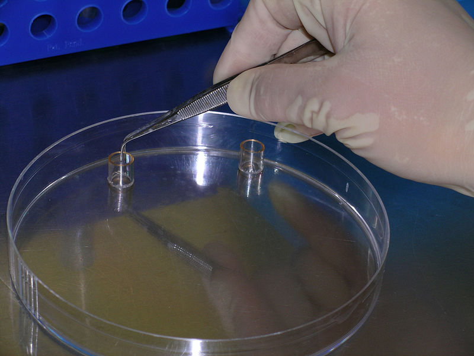
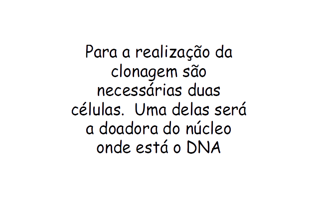
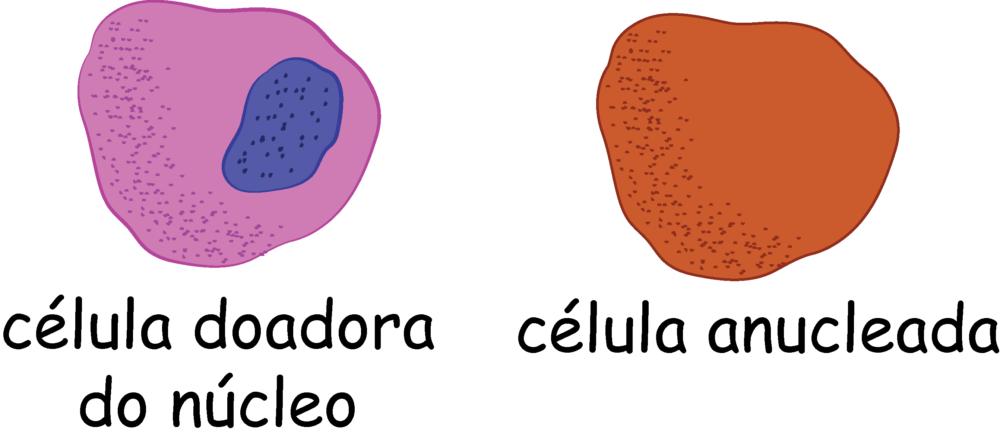
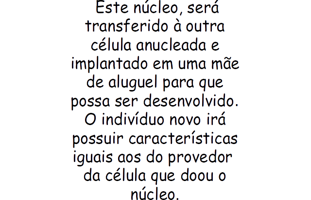
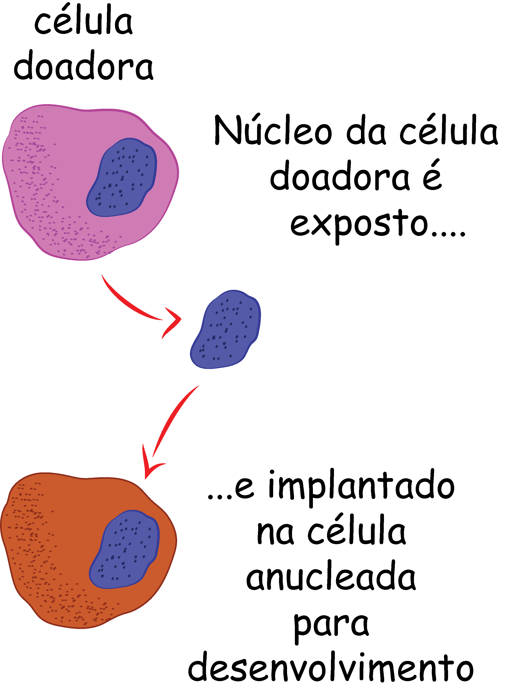
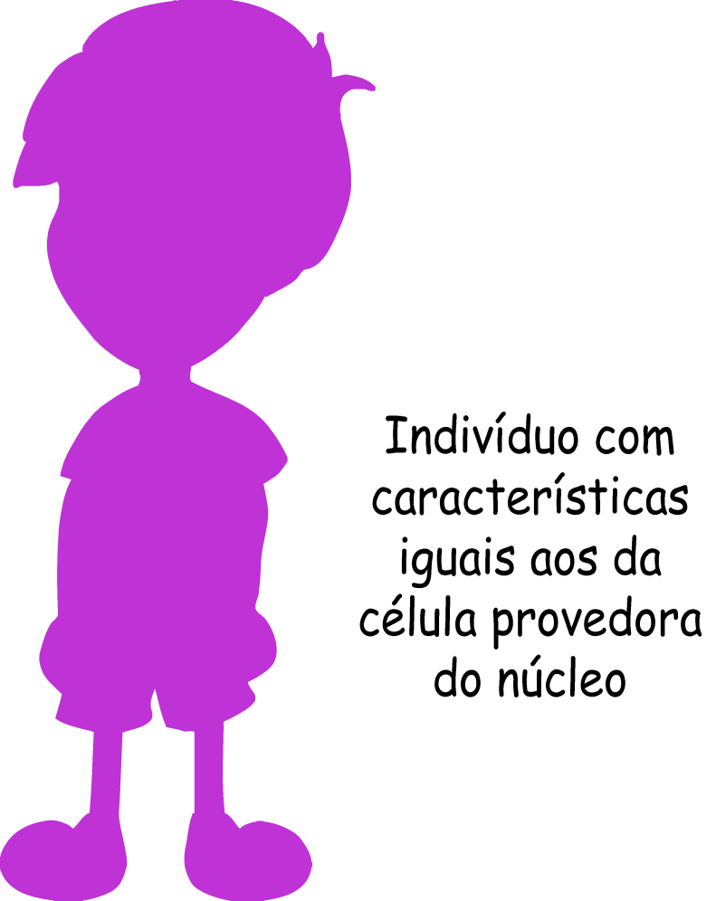

A clonagem é um processo de reprodução assexuada, onde se tem a produção de indivíduos geneticamente iguais a partir de uma célula-mãe. Clonar significa produzir inúmeras cópias idênticas de um mesmo trecho da molécula de DNA.

  
 